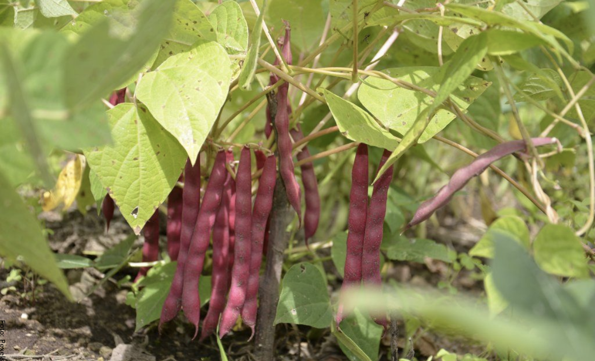

Frijol
Maximice la producción del cultivo de frijol con una guía completa que abarca, desde la preparación del suelo hasta las prácticas para una buena cosecha.
El cultivo de frijol (Phaseolus vulgaris) es uno de los más importantes y versátiles en la agricultura mundial. Originario de América, específicamente de la región que hoy comprende México y Centroamérica, el frijol ha sido cultivado desde tiempos precolombinos y es una fuente vital de proteína en muchas dietas tradicionales. Su nombre y variedades pueden ser diferentes, según el país o región en la que se cultive. Es conocido, además de frijol, como chícharo, habichuela, poroto, alubia, judía y caraota. Aquí encontrará una guía sobre las mejores prácticas en el cultivo de frijol para los agricultores, abarcando desde la selección de semillas hasta la cosecha.
Suelo para el cultivo de frijol
El suelo ideal para el cultivo de frijol debe estar bien drenado y ser rico en materia orgánica. Un pH óptimo para el frijol oscila entre 6.5 y 7.5. Es fundamental realizar análisis de suelo para ajustar los niveles de nutrientes y asegurar un crecimiento vigoroso de las plantas.
Preparación del suelo
-
Labranza profunda:
Mejora la aireación y permite una mejor penetración de las raíces.
-
Incorporación de materia orgánica:
Aumenta la retención de agua y la disponibilidad de nutrientes.
-
Enmiendas de cal:
Ajustan el pH del suelo si es necesario.
Elección de semilla de frijol
La elección de las semillas es un factor determinante en el éxito del cultivo. Es recomendable optar por semillas certificadas y de alta calidad. Las variedades híbridas suelen ofrecer resistencia a enfermedades y mejores rendimientos, aunque también existen variedades tradicionales que pueden ser adecuadas, según las condiciones específicas del cultivo. Asimismo, existen varios tipos de semillas que pueden agruparse de la siguiente forma:
-
Semillas híbridas:
Ofrecen alta productividad y resistencia a enfermedades.
-
Semillas tradicionales:
Preservan la biodiversidad y suelen ser más adaptables a condiciones locales.
-
Semillas orgánicas:
Producidas sin el uso de químicos.
Siembra
Aqui les tenemos un ejemplo de la siembra de frijol:
La siembra de frijol puede realizarse de manera directa en el campo, ya que esta es la práctica más común debido a la facilidad y eficiencia del proceso. Esta requiere una preparación cuidadosa del suelo y un manejo riguroso del riego y la protección contra plagas.
2 formas de realizar la siembra
-
Siembra directa:
Requiere un suelo bien preparado y un manejo intensivo del riego. Es la forma más común y eficiente de sembrar frijol.
-
Semillero:
Aunque menos común para frijol, puede permitir un control preciso de las condiciones iniciales y facilitar el manejo de plántulas en algunos casos específicos.
ejemplo de dichas formas se ve en la siguiente imagen:

Etapa vegetativa del cultivo de frijol
Durante la etapa vegetativa, el frijol desarrolla su sistema radicular y su estructura foliar. En esta fase, se debe considerar un buen manejo del riego y la fertilización para promover un crecimiento equilibrado. La poda y el soporte de las plantas pueden ser necesarios para garantizar una adecuada ventilación y exposición a la luz solar.
Manejo de la etapa vegetativa
-
Poda:
-
Soporte:
-
Control de riego:
Aunque menos común en frijol, puede ser útil para eliminar brotes innecesarios y mejorar la ventilación.
Utilizar estacas o redes para sostener las plantas trepadoras y facilitar la exposición a la luz solar.
Mantiene una humedad constante sin encharcamientos.
Etapa reproductiva
La etapa reproductiva abarca desde la floración hasta la formación de las vainas de frijol. En esta fase, es importante un manejo adecuado del riego y la fertilización para asegurar un buen cuajado y desarrollo de las vainas. El control de plagas y enfermedades también es crucial para evitar pérdidas en la producción.
3 consejos para el manejo de la etapa reproductiva
Polinización:
Asegurar la presencia de polinizadores naturales o utilizar técnicas manuales si es necesario.
Riego controlado:
Evitar el estrés hídrico para mejorar el cuajado de vainas.
Nutrición equilibrada:
Mantener un balance adecuado de nutrientes para soportar el desarrollo de las vainas.
Cosecha
La cosecha del frijol debe realizarse cuando las vainas alcanzan el grado de madurez deseado, lo cual puede variar según el tipo de comprador o mercado objetivo. La recolección debe hacerse con cuidado para evitar daños en las vainas y semillas, y es recomendable realizarla en las horas más frescas del día.
Tecnicas de cosecha
-
Manual:
-
Mecánica:
-
Poscosecha:
Permite una selección precisa y cuidadosa de las vainas.
Adecuada para grandes superficies, aunque puede dañar algunas vainas y semillas.
Manipulación adecuada para minimizar pérdidas y mantener la calidad.
Manejo de malezas
El manejo de malezas es fundamental para reducir la competencia por nutrientes y agua en el cultivo de frijol. Las prácticas recomendadas incluyen el uso de acolchados, la rotación de cultivos y el control manual o mecánico. Los herbicidas pueden ser una opción, pero deben usarse con precaución para evitar daños al cultivo.
3 estrategias eficaces de control
Las buenas prácticas en el cultivo de frijol buscan incorporar estrategias para controlar las malezas, aquí destacan:
Acolchado:
Reduce la germinación de malezas y conserva la humedad del suelo.
Control manual:
Arranque de malezas de manera regular.
Herbicidas
Uso controlado para evitar la resistencia y daños al cultivo.
Cultivo de frijol: consejos adicionales
El cultivo de frijol requiere de una planificación cuidadosa y un manejo riguroso de todos los factores involucrados, desde la preparación del suelo hasta la cosecha. Siguiendo las prácticas adecuadas, es posible obtener rendimientos elevados y de alta calidad, contribuyendo así a la sostenibilidad y rentabilidad de la explotación agrícola.